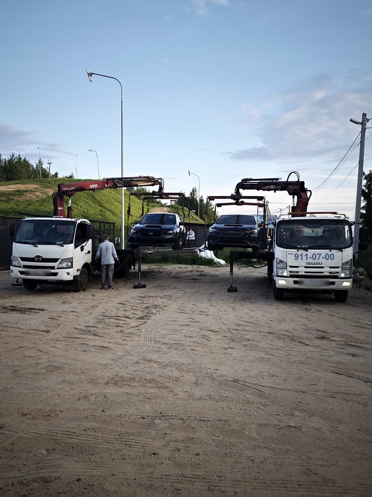
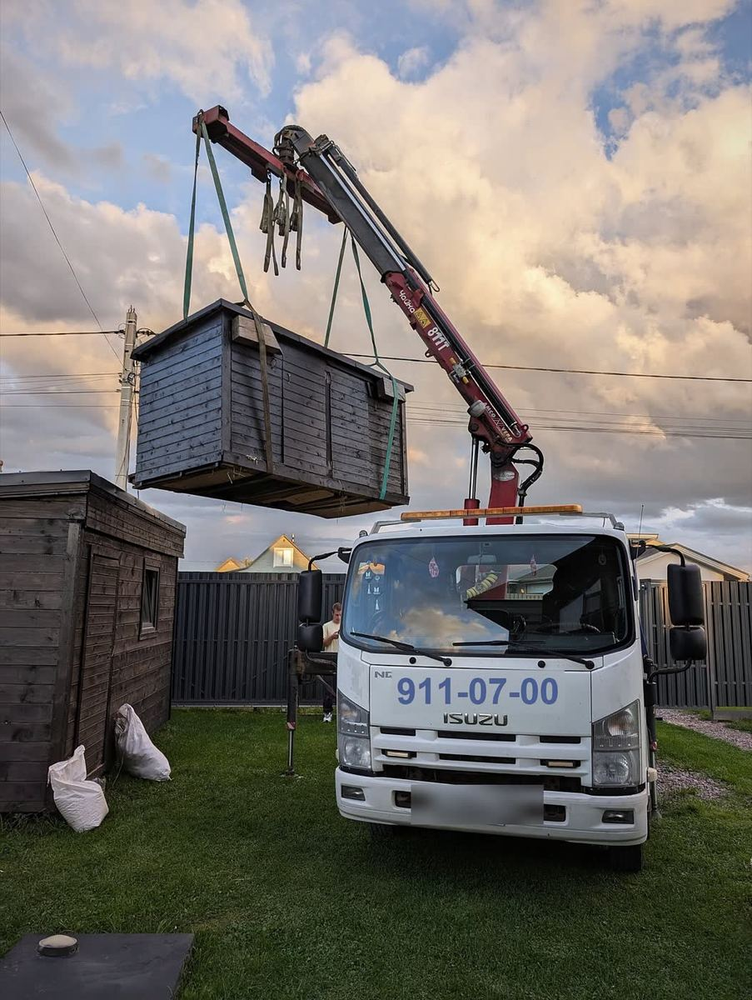
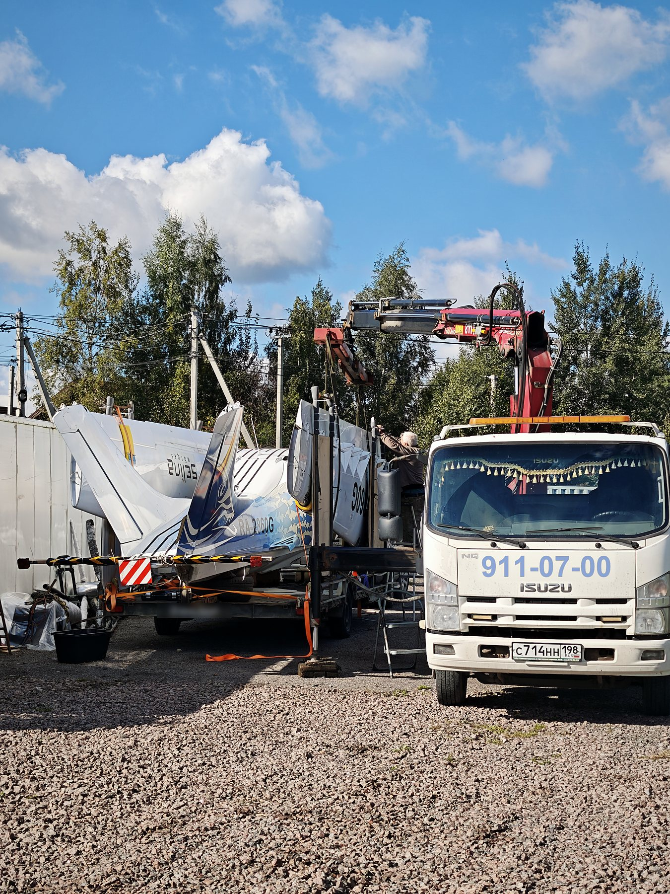
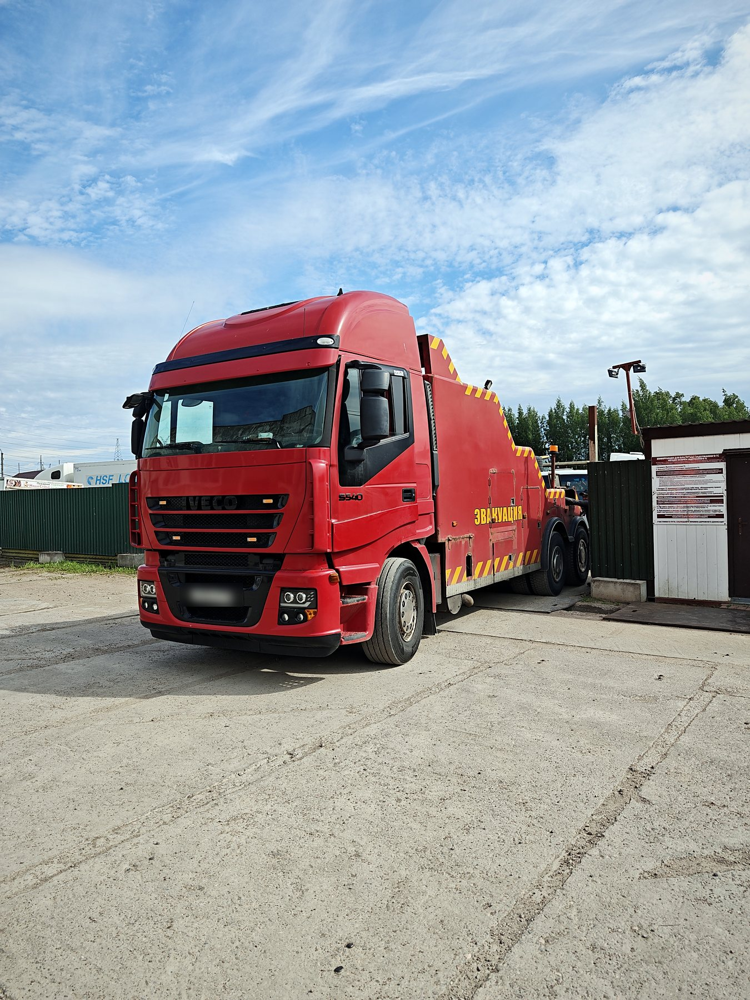

Эвакуатор с манипулятором или бортовой грузовик с КМУ: в чём разница
Коротко: бортовой грузовик с КМУ возит грузы: стройматериалы, бытовки, оборудование. Эвакуатор с манипулятором делают на заводе специально для автомобилей: у него есть траверса и колёсные захваты, и он проходит заводские испытания. Для машины нужен эвакуатор с манипулятором, от 8 000 ₽ + 100 ₽/км.
- Работаем 24/7
- Подача по СПб 20–40 мин
- Цена до выезда
Диспетчер ответит круглосуточно и назовёт стоимость до выезда.
Сложный случай? Пришлите фото, оценим стоимость: WhatsApp · Telegram · Max

Что такое КМУ
КМУ расшифровывается как крано-манипуляторная установка: кран со стрелой на грузовом автомобиле. Бортовые грузовики с КМУ классифицируют по грузоподъёмности и по типу стрелы. Ими перевозят стройматериалы, хозблоки и бытовки, оборудование, и этот список очень большой.
Что мы перевозили манипулятором, кроме машин



Чем отличается эвакуатор с манипулятором
- Специализированная траверса: машину поднимают не стропами за кузов, а через траверсу.
- Балансирующий цилиндр уравнивает разницу в массе передней и задней части автомобиля, машина висит ровно.
- Колёсные захваты касаются только небольшой части дисков и не оставляют повреждений, даже царапин.
- Технику изготавливают на заводе, и она проходит все положенные испытания.
Наша техника
Вся наша техника изготовлена на заводе «Чайка-Сервис» в Нижнем Новгороде. Завод специализируется на спецтехнике для разных задач, в том числе на эвакуаторах с манипулятором и сдвижной платформой.
Как сэкономить на эвакуации
Когда звоните нам, опишите ситуацию: где стоит машина, крутятся ли колёса, какая коробка, марка и год. Тогда диспетчер пришлёт правильный тип эвакуатора с первого раза. В некоторых случаях, в зависимости от марки и года выпуска, коробку передач можно разблокировать, и это сокращает расходы на эвакуацию.
Пользуясь нашими услугами, вы экономите время и деньги и быстрее закрываете неприятность, которая случилась на дороге.
Отзывы клиентов
★★★★★ Смотреть все отзывы на Яндексе ›«Работа выполнена на отлично! Машина доставлена в срок, всё прошло без лишних хлопот. Настоящие профессионалы!!»
«Эвакуатор прибыл очень быстро, водитель был профессионален и вежлив. Машину доставили целой и невредимой. Мне очень понравилось.»
«Лучшая служба эвакуации, с которой я когда-либо сталкивался! Быстро реагируют. Эвакуатор приехал вовремя. Рекомендую»
Частые вопросы
Можно ли перевезти машину бортовым грузовиком с КМУ?
Для автомобиля лучше эвакуатор с манипулятором: у него есть траверса, балансирующий цилиндр и колёсные захваты, которые не повреждают машину.
Перевозите ли вы бытовки и другие грузы?
Да, мы перевозили бытовку в коттеджный посёлок и кран на стройку. Опишите груз, и диспетчер подберёт технику и назовёт стоимость до выезда.
Где сделана ваша техника?
На заводе «Чайка-Сервис» в Нижнем Новгороде, он специализируется на спецтехнике.
Как не переплатить за эвакуацию?
Описать ситуацию или прислать фото. Иногда коробку можно разблокировать на месте, и тогда эвакуация обходится дешевле.
Нужен эвакуатор сейчас?
Круглосуточно. Стоимость назовём до выезда.